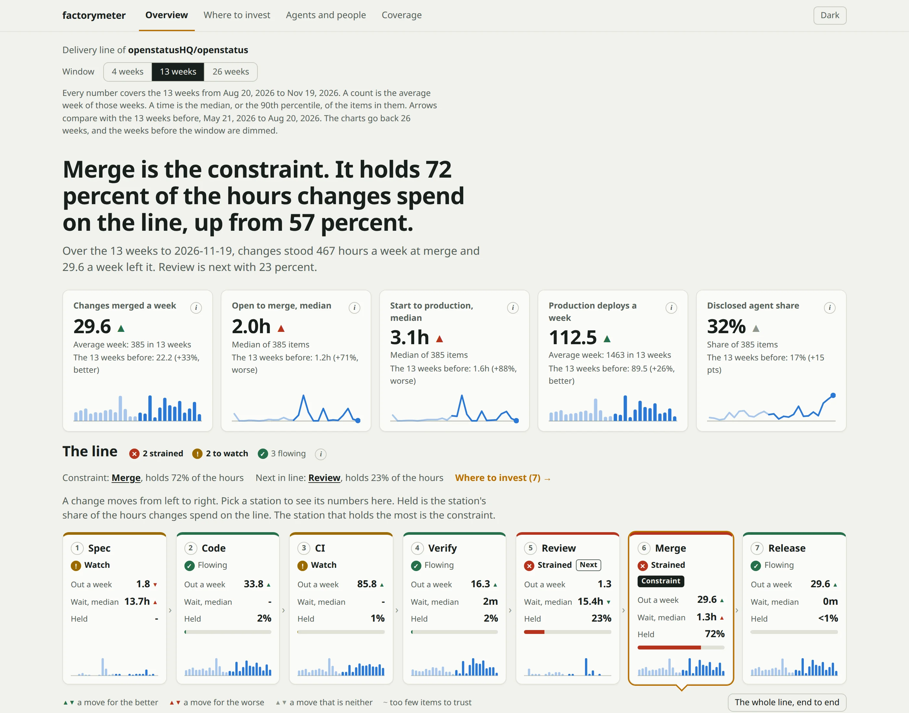
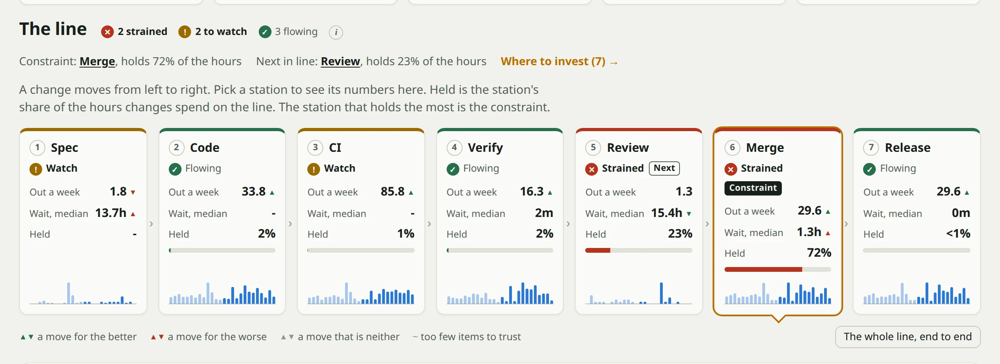
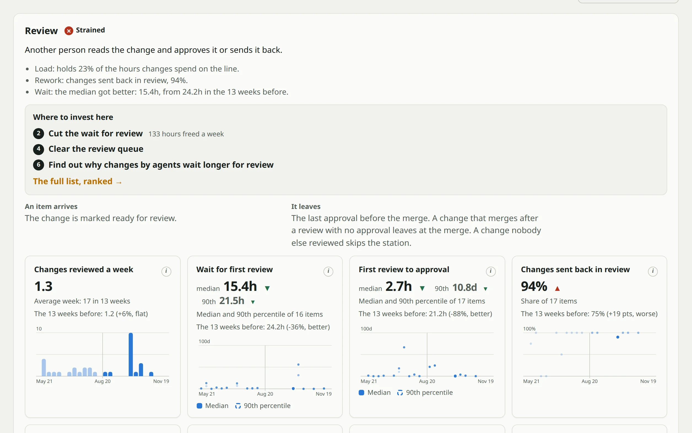
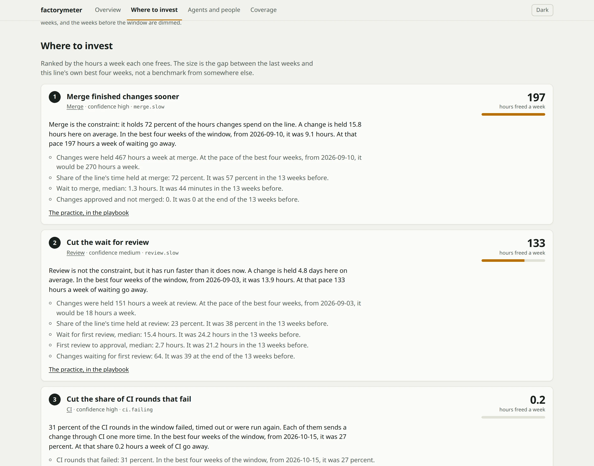
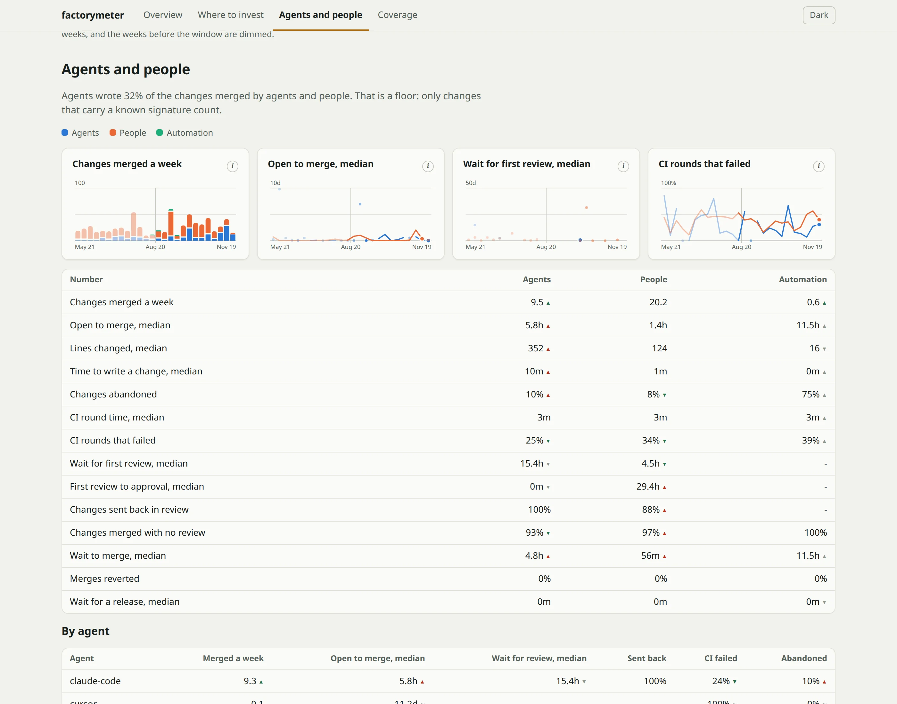

Open source · read only · runs on your machine
Coding agents open pull requests faster than people do. The line does not get faster by the same amount: the work piles up at review, at CI, at release. factorymeter reads your GitHub history and shows where.

How it reads a line
factorymeter follows each change through the stations of your line and adds up the hours it spends at each. The station that holds the most hours is the constraint. Speed up any other station and the line barely moves.
A ticket waits for someone to start.
The change is written.
The checks run on each push.
The change runs on an environment before it merges.
Another person approves it or sends it back.
The approved change lands.
It reaches production.
Every station gets the same five numbers: what leaves it a week, the wait, the work, the rework and the queue. Every number has a written definition, and every one is split by agents, people and automation.
The page
Flowing, watch or strained, with a mark and a word, never color alone. A station gets the worst of three grades: how much of the line's time it holds, how often its work fails or goes back, and whether its wait got worse.
Above the line: the constraint, the station next in line once you free it, and the way to what to do about it.

Pick a station and its numbers open right below the line. The page does not jump. A median and its 90th percentile share one chart. Point at the i of any number to read exactly what it counts.
A station you have not connected says what it needs: verify, for one, reads the preview deployments of your pull requests.

Each recommendation is a rule that fired on your own numbers. It says what to do, shows the numbers behind it, and names the changes to look at first.
The gain is sized against the station's own best four weeks, in hours freed a week. Not against a benchmark from somewhere else.

Every number side by side for agent changes, human changes and automation. Do agent changes wait longer for review? Fail CI more often? It is all there.
Agents are found by an open registry of signatures: Claude Code, GitHub Copilot coding agent, OpenAI Codex, Cursor, Devin and Jules. The agent share is a floor, and the page says so.

What it does not do
The GitHub client sends GET requests and GraphQL queries, and refuses a mutation. A read-only token is all it needs. A public repository needs no permissions at all.
The history goes into a store on your disk. The page is served from localhost and loads nothing from the network. No account, no dashboard to log in to, no telemetry.
Apache 2.0. Every number has an id and a definition: factorymeter metrics. Every recommendation has its rule: factorymeter rules. Every limit is printed with the report.
Install
One line on macOS or Linux. It takes the newest release, checks it against the release's checksums, and puts it in ~/.local/bin:
curl -fsSL https://marshal-org.github.io/factorymeter/install.sh | shLater, factorymeter upgrade replaces it in place. Windows: the releases page. With Go: go install github.com/marshal-org/factorymeter/cmd/factorymeter@latest.
A few questions, a config file in ~/.config/factorymeter, then the first sync. It takes a token from GITHUB_TOKEN, or from the GitHub CLI when you are logged in.
factorymeter init # what to read, Linear or Jira, how far back
factorymeter serve # open http://127.0.0.1:7377The first sync shows what it reads and how long is left. A busy repository takes about ten minutes: openstatus, with 911 changes and 13,242 CI runs, took 10. Every later sync reads only what changed.
The report goes to the job summary, and the page and JSON to a build artifact. Read permissions only.
- uses: marshal-org/factorymeter@v0.9.0
with:
since: 13wThe whole workflow, and Linear and Jira tickets, are in the README.
Then try a fix before you make it
Every report links to Lights Out, the simulator of The Software Factory, with your own numbers filled in. Add review capacity, faster CI or more agents, and see what your line does.
Open Lights Out